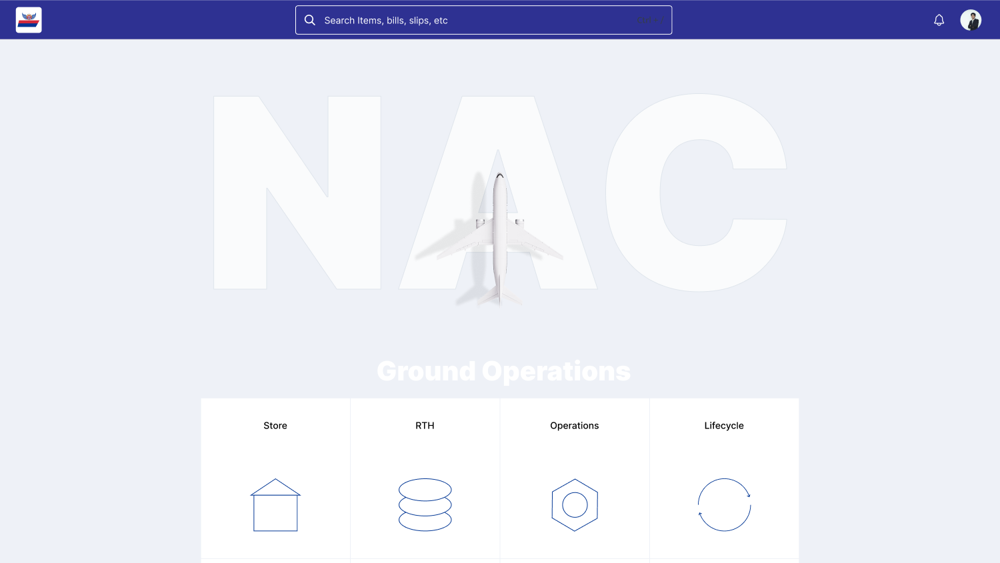
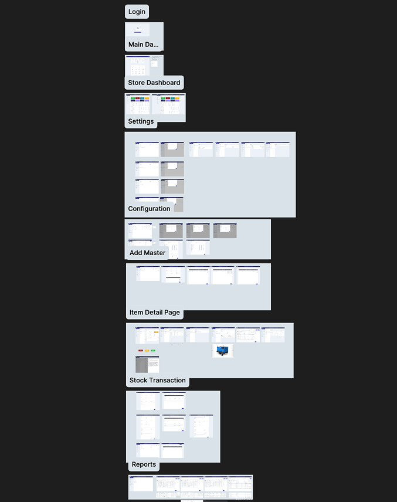
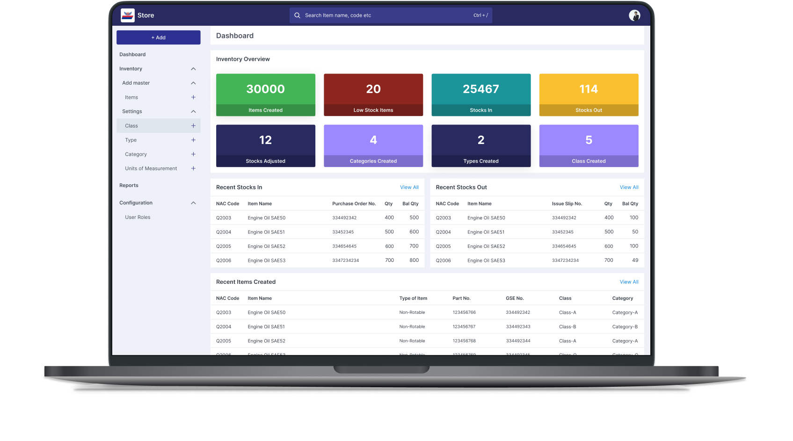

NEPAL AIRLINES
GSE INVENTORY
SYSTEM
Designed a Ground Support Equipment inventory management system for Nepal Airlines Corporation (NAC) a comprehensive web application that digitised the tracking, maintenance scheduling, and lifecycle management of aviation ground equipment across multiple airport locations.

GROUND SUPPORT.
DIGITALLY TRACKED.
EVERY ASSET.
Nepal Airlines Corporation (NAC), the national flag carrier of Nepal, manages a large fleet of Ground Support Equipment (GSE) tow tractors, baggage carts, ground power units, air stairs, belt loaders, and more , essential for airport ground operations across multiple locations.
The GSE inventory management system was built to digitise and streamline the tracking, maintenance scheduling, lifecycle management, and compliance reporting of all ground equipment , replacing paper-based logs and fragmented spreadsheets with a single unified platform.
PAPER LOGS
AND SPREADSHEETS
AT 30,000 FEET.
NAC's ground operations team relied on paper-based logs and manual spreadsheets to track equipment inventory, maintenance schedules, and equipment status across multiple airport stations. This caused data discrepancies, delayed maintenance responses, compliance risks, and significant operational inefficiencies.
Core challenge: Design an intuitive inventory management system that aviation ground staff with varying levels of computer literacy could adopt quickly , while providing powerful reporting and compliance tracking for management at the national airline's headquarters.
UNDERSTANDING
GROUND OPERATIONS
Aviation ground operations have unique workflow constraints equipment is spread across multiple airport locations, maintenance schedules are regulated by aviation authorities, and equipment downtime directly impacts flight turnaround times and operational costs.
Ground staff interviews
Conducted interviews with NAC ground operations staff and supervisors to understand how equipment was currently tracked, maintained, and reported , mapping every step of the existing paper-based workflow.
Equipment lifecycle audit
Audited the full GSE lifecycle: procurement → deployment → maintenance → repair → decommissioning. Identified gaps in maintenance history tracking, spare parts management, and regulatory compliance documentation.
Stakeholder requirements
Worked with NAC management and the Rara Digital Lab team to define core requirements: real-time equipment status, maintenance scheduling, location tracking, compliance reporting, and user role management for different airport stations.
TARGETED GOAL
Centralised GSE inventory + maintenance scheduling
The goal was a unified system where every piece of ground equipment had a digital record capturing its location, status, maintenance history, and compliance documentation , accessible in real-time by ground staff at any airport station and by management at headquarters.
The system needed to support multiple user roles (ground staff, supervisors, maintenance engineers, management) with appropriate data access and action permissions for each role.

FOUR PROBLEMS.
FOUR SOLUTIONS.
Paper Logs Made Data Unreliable
Replaced paper logs with digital equipment records with mandatory fields, validation, and real-time sync across all airport stations.
No Visibility into Maintenance Schedules
Built a maintenance scheduling dashboard with automated reminders, overdue alerts, and a calendar view for planned vs. completed maintenance.
Equipment Location Was Unknown
Implemented location tracking per equipment item with check-in/check-out workflow and station-level inventory views.
Compliance Reporting Was Manual
Automated compliance reporting with one-click report generation for aviation authority requirements , reducing reporting time from days to minutes.
BEFORE &
AFTER
Physical logbooks with handwritten entries
Each airport station maintained separate paper logbooks. Entries were inconsistent, handwriting was illegible, and cross-station comparisons required physically collecting logbooks.
Centralised digital records with validation
Every equipment entry has mandatory fields, structured data, and timestamps. Records are instantly visible across all stations. No more chasing paper.
Maintenance tracked on wall calendars
Maintenance schedules were managed through wall calendars and individual memory. Missed maintenance was common and compliance audits were stressful.
Automated scheduling with proactive alerts
Equipment-specific maintenance schedules with automated notifications before due dates. Overdue maintenance triggers escalation to supervisors.
Equipment could be anywhere
With equipment moving between stations, hangars, and runways, staff often wasted hours locating specific items. No accountability for misplaced equipment.
Real-time location with check-in/out
Staff check equipment in and out of locations using a simple interface. The system maintains a full movement history for every asset.
Reports took days to compile
Aviation authority compliance reports required manually collecting data from multiple logbooks, cross-referencing, and formatting , taking up to a week per report.
One-click compliance reports
Pre-configured report templates pull real-time data from the system. Reports are generated in seconds with accurate, auditable data.
THE FINAL
DESIGN
Validated through prototype walkthroughs with NAC ground operations supervisors and management. Iterated based on real-world scenarios like equipment breakdown during turnaround, end-of-month reporting, and multi-station inventory reconciliation.

THE RESULTS
Measured through pilot deployment feedback and comparison with baseline paper-based processes.
WHAT I LEARNED
Design for varied digital literacy
NAC's ground staff included users with very different levels of computer experience. I learned that simplicity , large touch targets, clear visual cues, minimal text , wasn't a compromise; it was a requirement. The system had to work for everyone on day one.
Aviation has unique UX constraints
From tarmac environmental conditions (screen glare, gloves) to the criticality of uptime (every minute of equipment downtime affects flight schedules), designing for aviation operations taught me to consider physical context as seriously as digital context.
Replacing paper requires trust-building
Staff who had used paper logs for decades were naturally skeptical of digital systems. I learned that the adoption strategy was as important as the design itself , including training sessions, paper-to-digital transition workflows, and visible quick wins in the first week.
Government projects require extra rigour
Working with a state-owned enterprise meant additional compliance, procurement, and stakeholder alignment processes. I learned to build extra buffer for reviews and approvals into the timeline, and to document every design decision thoroughly.
LIKE WHAT
YOU SEE?
Let's talk about what we can build together.